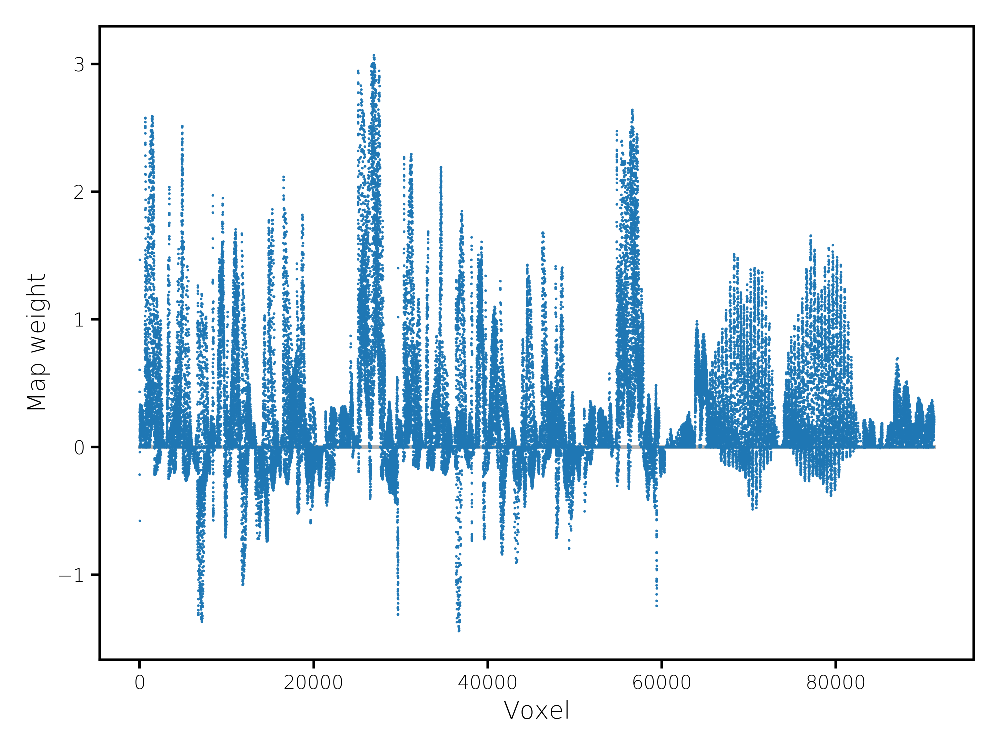
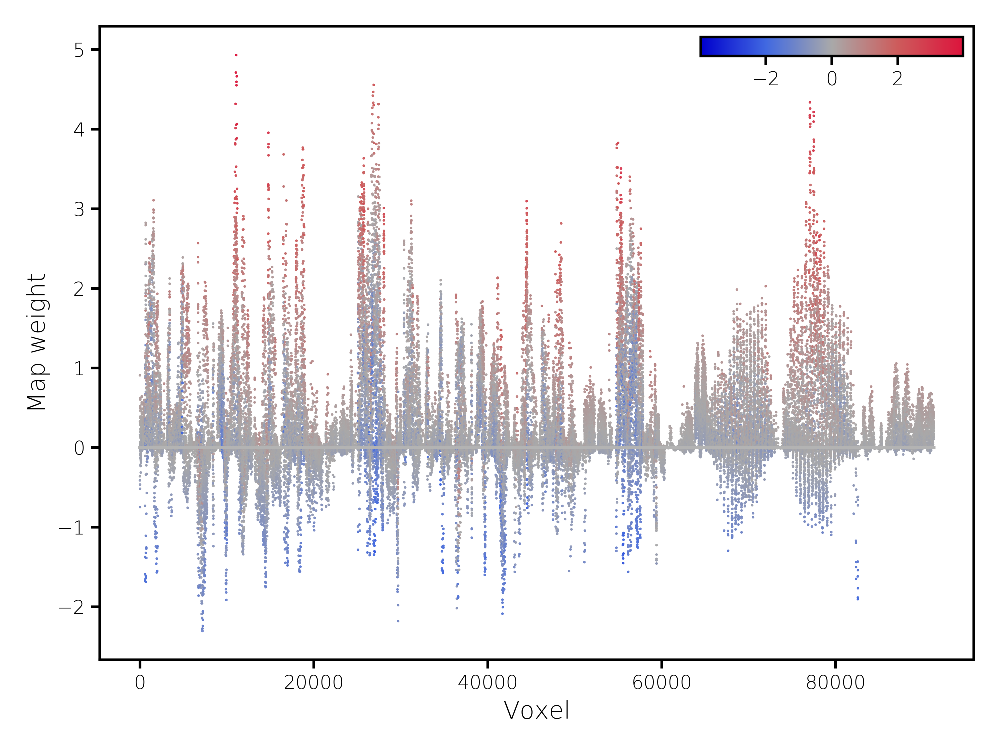
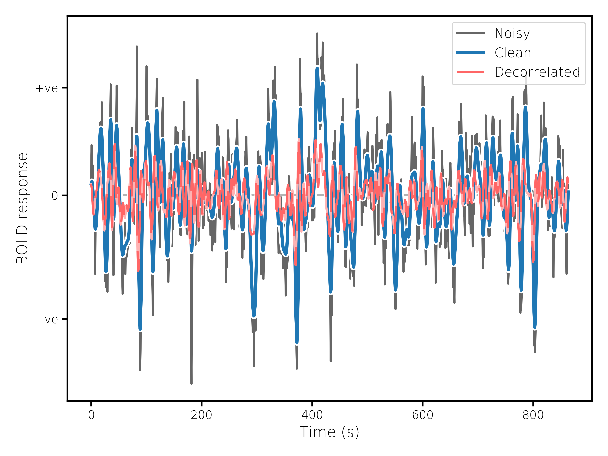
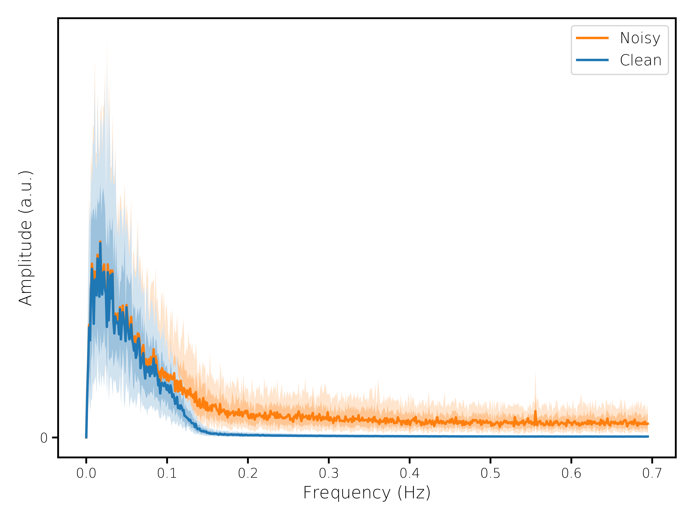

PROFUMO Web Report
Mode 30
Prev
—
Home
—
Next
Spatial maps

Group map

Subject map (subject
361234
)
Changes relative to the group map are indicated by the colouring of the points.
Time courses

Example time course (subject
361234
, run
R2_LR
)

Frequency content of time courses